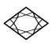
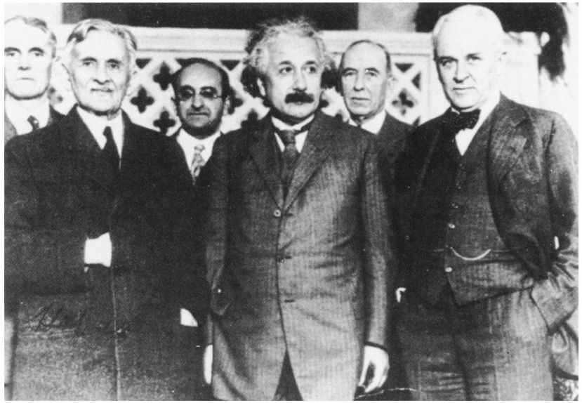
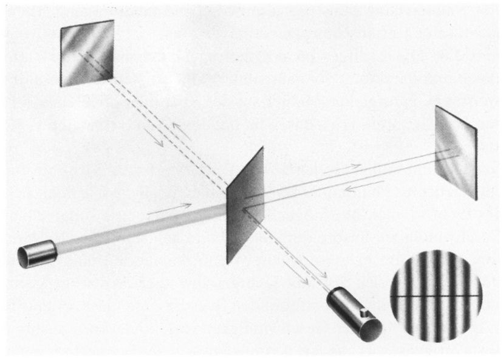

第六章牛顿以讲述他对光速是个常量的疑问为开场。很显然，自从我们离开剑桥后他就一直在思考这个问题。现在他求助于爱因斯坦。
牛顿： 光怎么可能总是以相同的速度传播呢？在我的力学中并不是这样的。如你们二位所知，物体的速度取决于观察者。如果观察者改变其速度，那么被观察物体的速度必定也会改变。任何物体的速度都只能是相对的。它不仅取决于物体本身，还取决于观察者的运动状态。为什么光就应当不一样呢？
这可不是我对光的唯一疑问。离开剑桥之前我们就讨论过你的光量子理论。它显然是两类解释的一种综合：一方面用我本人的粒子的观念对光做出的解释，另一方面则是依据波动说做出的解释。爱因斯坦先生，我应当祝贺你在那方面所取得的成就。不过，如果光至少部分地是一种波动现象，我想知道它是在什么介质中运动。大海的波涛是以水面作为它们的介质，声波借助的是空气。那么，光的介质是什么呢？
此外，我已经知道，光代表一种电磁现象，而且光线、X射线和无线电波之间不存在质的差别。它们都是电磁波，唯一的差别只在于它们的波长。
如果存在某种介质比如以太，电磁波能在其中传播，那么，物体运动的方式肯定会与以太有关。只有在相对于以太是静止的参考系中测量光的传播速度时，你才能说光速是个常量。这样的系统我可以接受。这与我的绝对空间的想法是一致的，那么绝对空间就会由这种电磁以太来确定。因此我的问题是：以太存在吗？
爱因斯坦聚精会神地听牛顿说着。他犹豫了一下才回答。
爱因斯坦： 艾萨克爵士，我明白你的异议。同样的这些问题也曾在我的脑海中萦绕了多年。但有些其他问题使我从16岁起就一直忙于搞清楚它们。直到1905年我才找到问题的答案。当观察者本身以光速追逐光波时会发生什么事情呢？
对海洋的波浪来说，这轻而易举就能实现。前天在一部电影里我看到有人在参加一项称为“冲浪”的现代运动，人站在一块板上“乘”浪前行。他运动的速度和海浪相同。假设我们可以在光波上冲浪，在我们的参考系中我们能观察到什么呢？我们至多能观察到我们这个波的波峰和紧挨着的那个波峰，而且这些看起来会是静止的。我们看到的这个画面将会是静止的，这与一个静止的观察者观察以光速经过的光波时所看到的情况有根本的差别。
牛顿： 那似乎确实很奇怪。就我所知，电磁现象可以很好地用数学来描述；犹如在我的力学中，参考系并不扮演任何角色。定性而言，在所有参考系中，光波看起来都应该是相同的。在某种情况下你得到的是一种动力学图像，传播的光波在运动，而在其他情况下你得到的是不随时间变化的、就像墙上的画一样静止的图像，这似乎很奇怪。有些东西在此处看起来并没有意义。由于某种尚待确定的原因，也许在光波上“冲浪”是不可能的。

图6.1 美国物理学家迈克耳孙（1852—1931）（左）与爱因斯坦（中）及加州理工学院院长密立根（Robert A. Millikan）（右）。这张照片摄于20世纪20年代末，当时爱因斯坦正在加州理工学院做访问教授。（承蒙加州理工学院惠允。）
牛顿的论述使我笑了，而爱因斯坦冲我眨了眨眼。我们两人都意识到牛顿的思路对头了。
爱因斯坦： 你刚才所说的相当接近真理，或者说相当接近我的相对论。我们很快就会明白不会有诸如在光波上冲浪这样的事情。但首先让我们先回到以太的问题上，由于各种原因，这个难题曾令19世纪末的许多物理学家忙得焦头烂额。
哈勒尔： 你正要讲的可能是迈克耳孙（Albert Abraham Michelson）和莫雷（Edward Williams Morley）的实验结果吧？
爱因斯坦： 是啊，但又不止于此。我们还是先谈谈那个实验吧。该实验是基于一个非常简单的想法。如果存在像以太这样的东西，你们就可以预料到，地球在绕太阳旋转的同时会在以太中运动。毕竟，地球是以30千米每秒的速度在空间运动。更精确地说，我们是在太阳处于静止状态的参考系中观察到这个速度的。
现在，如果相对于太阳来说以太是静止的，那么地球相对于以太的速度就将是30千米每秒。地球上的观察者就会感到一阵阵强烈的以太风吹在脸上。当然，他可能意识不到这一点，因为我们假设的是当地球在以太中运动时没有摩擦。否则，以太风早就会使地球围绕太阳的转动停下来。
我们已经假设了太阳相对于以太是静止的。但即使不是那样，我们也不可能不用以太风，这是因为地球运动的速度——它的定向速度——在一年当中是不断变化的。在初夏时地球运动的方向与初冬时相反。因此整个一年中以太风都会存在；如果真是这样，我们只能假设它与地球一起环绕太阳运行。
牛顿： 这就变得很清楚了，我们可以测量以太相对于地球的速度。你们只须在不同方向上以及在一年中的不同时间测量地球上的光速即可。
爱因斯坦： 祝贺你！你恰恰重建了迈克耳孙和莫雷实验的基本原理。但请允许我对这一重要实验的历史说几句：迈克耳孙是美国物理学家，还在上大学时他就给自己布置了证明以太风存在的任务。早在1881年在德国柏林的亥姆霍兹研究所实习期间他就做了第一次实验。那是一次比较粗糙的实验，他的结果也不那么确定。
后来迈克耳孙回到美国，与他的一位化学家同事莫雷进行了一次更加精细的实验。实验结果毋庸置疑。这个实验从1887年就开始进行。这两位科学家制作了一件仪器，它能测量出光线在不同方向运动时速度间的非常小的差别。
牛顿： 你能告诉我这种仪器是什么样的吗？
爱因斯坦没有答话，而是找了张纸开始在上面画草图（见图6.2）。

图6.2 迈克耳孙—莫雷实验草图。单色光束从左边的光源出发，然后被镀银的平面镜分为互相垂直的两束。这两束光被两块平面镜反射后再重叠在一起。所得的光子束是用一个观测望远镜来分析的。通过利用像圆形插图中所示的结构的干涉现象，即使是两束光传播速度间的最小差别也可以被检测出来。
爱因斯坦： 这个实验的思想是对比沿不同方向运动的两束光线的速度。假设我们从一个特定光源产生光，并把这束光设置成单色的，即为某种特定的颜色。这束光（比如说）向右传播并被玻璃平面镜分为两半。一半光穿过玻璃继续沿最初的方向行进。另一半被以90°角反射，并沿与最初方向垂直的方向行进。在各自方向上行进几米之后，两束光线都会被另外两块平面镜反射回来。返回的两束光线在最初的玻璃平面镜的镀银表面再次相遇，而且部分光会被偏转到一边射向一个望远镜，通过望远镜就可以观察到这些光线。
牛顿： 现在我们看一下：如果两束光线的光粒子以不同的速度传播，在最终的观察点我们就能检测到它们到达的时间略有不同。一部分光会到得早一些，另一部分稍晚一点。可是为什么你们要用一个特制的望远镜来观察呢？难道用一只精确的时钟来做就不行吗？
爱因斯坦： 从原则上讲你是对的。可是有个小问题：记住，我们正在处理的速度约为300 000千米每秒，而在这两部分之间可预料的差别的数量级可能只有30千米/每秒。在到达时间上可能的差别将会很微小，远低于时钟所能测量的水平。
因此，这里我们使用了一个技巧，利用了光的波动特性。当两束光波相遇时，它们既可以被放大也可以彼此抵消，这取决于是波的哪部分重叠，是两个极小、两个极大或是一个极小与一个极大。我们的术语叫做“干涉现象”。用一个小望远镜就可以观察到这类现象，但我不想再讲细节了。总之，用这种方法我们就可以观察并测量很小的时间差。
牛顿： 爱因斯坦先生，你真让我痛苦！来，快告诉我真相吧！迈克耳孙和莫雷测出的时间差到底有多大呢？它们与地球的轨道速度一致吗？
爱因斯坦 （恶作剧般地笑着并一字一句地说）：结果是零。没观察到任何差别，尽管实验精确得即使地球只以5千米每秒的速度在空间运动也足以注意到以太的效应，何况地球的实际速度是30千米每秒。
牛顿： 那就意味着光速终究是个常量了……
他讲话时有气无力，极力想掩饰他的失望。
爱因斯坦： 艾萨克爵士，在每个参考系中光速都是相同的，它是个自然常量。空间中的每一处，在地球上与在遥远的星系中完全一样，光是以相同的速率在传播。
牛顿 （变得脸色苍白）：我的天哪！光真是一种荒唐的现象！这看来是不可能的。光传播的速度怎么会在所有参考系中都相同呢？想想你们的光波冲浪者吧。假设真的有人以与光波相同的速度冲浪前行，难道那不意味着光在他的参考系中没法以300 000千米每秒的速度传播吗？如果光波的观察者以超过光速的速度运动，又会出现什么情况呢？他就不得不超过光波，因此在他的参考系中光就会沿反方向仓促退行。可是，如果我正确理解了你的意思，上述情形就是不可能的。这必将直接与我的力学定律矛盾。爱因斯坦先生，我必须承认，这若非不合逻辑，那么就是荒唐透顶的。请原谅我这么粗鲁地大喊大叫……
爱因斯坦同情地微笑着、听着。他不愿作答，因此我接过话茬。
哈勒尔： 牛顿教授，你刚才讲你认为光的行为是荒唐的。我要强调的是，不仅是光，还有普通物体的运动也要受那种荒唐行为的折磨。我们已经发现，你的力学定律并不是严格的，而只是近似的。物体运动得越快，则偏差就越大。可是，只有当物体的速度与我们现在所知的299 792 458米每秒的光速相当时，这种偏差才显著。
牛顿： 换句话说，行为荒唐的并不只是光而是自然界中的所有东西？
爱因斯坦： 我亲爱的牛顿，当你的力学定律遭到质疑时你该是多么失望，这完全可以理解。可是我请求你保持头脑冷静。实验已经证明了，光速是自然界的恒定常量。绝没有其他可能性。
牛顿： 这正是我的难题。请告诉我，怎样才能接受光速不变性？如果光速不变是正确理论的必要条件，我准备在我的力学定律中做适当的改动。那是我可以接受的。可是，当你说存在一个普适的光速时，我相信你否定的不仅是力学定律，而且更糟糕的是否定基本的空间和时间定律。
哈勒尔： 不是基本的空间和时间定律，而是你的 空间和时间定律。
牛顿 （嘲讽地）：我亲爱的先生，你的意思是说人们只有通过改变空间和时间的结构，才能理解光的荒唐行为？
爱因斯坦： 艾萨克爵士，这正是他的意思，而且这也正是我在1905年所提出来的观点。这就是自那时起被称为相对论的东西。只有当你重新定义了空间和时间的概念，你才能理解光。
听了这些话，牛顿的脸色变得更加苍白。他看起来完全惊愕了，考虑到爱因斯坦的话带给他非同一般的冲击，他的反应是颇能理解的。
我们坐在那儿沉默了一会儿，爱因斯坦心不在焉地随意画了一些抽象的草图，在他的安乐椅上放松了一下。最后，牛顿快速地看了一下手表，然后说：“先生们，我想我需要一点时间来消化一下我刚才所听到的东西。快到午饭时间了，让我们休息一下。我想到河边散散步，然后也许我们可以在阿尔贝格饭馆再碰面共进午餐。”
我们同意了，不久牛顿就离开了爱因斯坦的寓所。